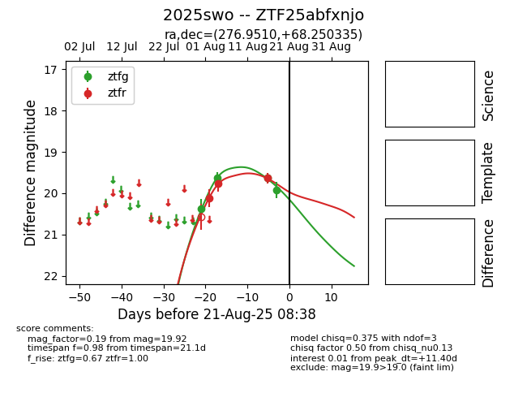

Target 2025swo at 2025-08-21 09:16, see:
FINK: fink-portal.org/ZTF25abfxnjo
Lasair: lasair-ztf.lsst.ac.uk/objects/ZTF25abfxnjo
ALeRCE: alerce.online/object/ZTF25abfxnjo
TNS: wis-tns.org/object/2025swo
YSE: ziggy.ucolick.org/yse/transient_detail/2025swo
alt names
ZTF25abfxnjo (ztf,alerce)
2025swo (tns,yse)
coordinates:
equatorial (ra, dec) = (276.9510,+68.25033)
galactic (l, b) = (98.4441,+27.22406)
photometry
last ztfg=19.92, ztfr=19.64
4 ztfg, 3 ztfr detections
